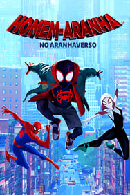

Homem-Aranha no Aranhaverso
2018
10
1h 57min
Miles Morales é um jovem negro do Brooklyn que se tornou o Homem-Aranha inspirado no legado de Peter Parker, já falecido. Entretanto, ao visitar o túmulo de seu ídolo em uma noite chuvosa, ele é surpreendido com a presença do próprio Peter, vestindo o traje do herói aracnídeo sob um sobretudo. A surpresa fica ainda maior quando Miles descobre que ele veio de uma dimensão paralela, assim como outras variações do Homem-Aranha.